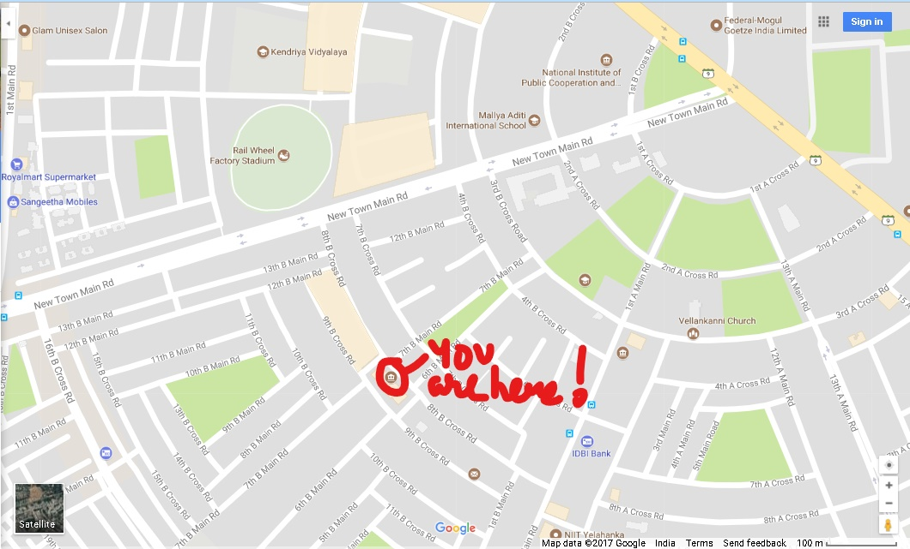

RIDDLE 5
NAME: Mr. Shree Ram
AGE: 48
REASON OF DEATH: Stabbed in chest and put inside tyres of a truck.
KILLER: Black clothed serial killer.
EVIDENCE: Fingerprint on tyres match the prints raken from before.
INFORMATION:Victim was an officer who who used make a lot of money by giving fake DL to people.
RIDDLE 6: The body is covered with WORDS and LETTER and not blood to make an PILE of leaves.

MARK URSELF FOR I SHALL ETCH YOU ALSO